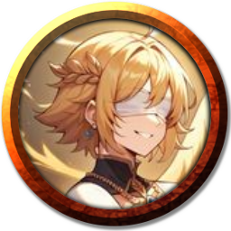
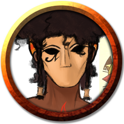
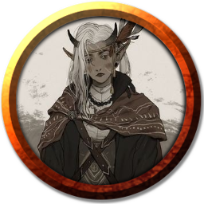
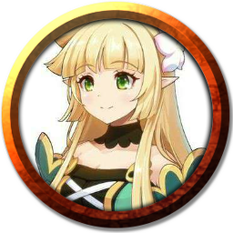
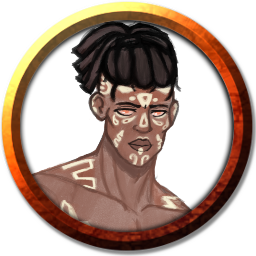
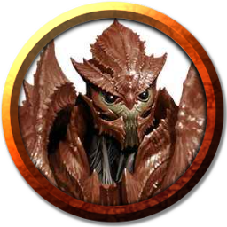
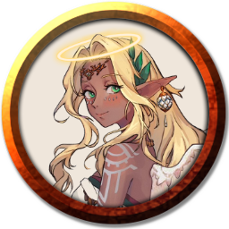

Conheça os Personagens
- 
- 
- 
- 
- 
- 
- 
Alya Mirandege
Alya uma jovem elementalista que ainda procura seu caminho no mundo, explorando Ubani e treinando para se tornar mais forte.
Uma campanha Tormenta 20, um sistema 100% brasileiro!
Um grupo sem nome foi contratado por um casal de mercadores para escoltar três carroças de mercadorias até Valkaria, mas foram sequestrados por puristas em seu caminho. Eles escaparam de lá derrotando as ameaças, mas encontraram evidências sobre um esquema estranho. Eles começaram a estudar as evidencias e uma espada misteriosa que encontraram em sua escapada, que aparentava ser a causa de toda a operação - incluindo o sequestro do grupo -. Após muito estudo e pesquisa, descobriram que a arma estava selada. Uma clériga de Wynna poderia ajudá-los, mas eles precisavam de alguns componentes que podiam ser encontrados em uma criatura e muito dinheiro. Eles conseguiram uma missão sobre a tal criatura, um Guerreiro Imortal, que estava em uma vila próxima da capital, assustando a população.
Chegando na vila, ninguém parecia saber sobre a missão que foi divulgada, o que fez o grupo investigar o que estava acontecendo. Lá encontraram com algumas figuras suspeitas, como um lefou, mas decidiram esperar para ter uma audiência com um nobre local antes de tomar decisões com ele. Eles perseguiram os rastros da criatura, e foram levados a uma caverna dentro de uma floresta próxima graças as informações dos locais e rastros deixados pela coisa.
Nessa caverna havia um antigo Osteon alquimista que estava trabalhando em poções de curas e depois de um breve conflito, admitiu que a criatura estava no lugar e causando muitos problemas. Após uma batalha intensa eles derrotaram o Guerreiro Imortal e coletaram os materiais necessários, para então voltarem para a vila e se encontraram com o nobre. O encontro não foi bem, o nobre foi extremamente hostil com o grupo e os expulsou de sua mansão, mas eles descobriram uma conexão entre o homem e os puristas que os sequestraram.
Em busca de mais informações o grupo conheceu uma nova companheira, Liv, uma druida do deus dos monstros que os ajudou a descobrir uma contaminação da água da vila estava envenenada por uma substancia estranha. Substância essa que estava nos remédios do lefou suspeito, mas nada pode ser feito pois o lefou se corrompeu pela tormenta e começou a atacar indiscriminadamente todos da vila, ele foi felizmente derrotado pelo grupo e os moradores, mas a culpa do ataque recaiu sobre os aventureiros, que foram sentenciados a execução pelo nobre corrupto, que era o verdadeiro culpado. Porém, a influência de um dos membros do grupo chamado Rel Blazeaxe os salvou da execução e abriram uma brecha para derrotar o nobre e seus associados
O grupo voltou para a capital e relatou os acontecimentos da vila para a guarda, mas foram desacreditados. O próximo passo foi remover o selo da espada misteriosa, que revelou poder ser um item inteligente e contou palavras proféticas sobre um nascimento de um novo deus envolvendo a Tormenta.
Não demorou muito tempo para eles começarem a ser perseguidos pela descoberta. Eles foram roubados por Inomi, uma ladina enviada por uma gangue de bandidos que possuiam um amigo dela como cativo, obrigando a mulher a trabalhar para eles. O grupo fez um acordo para ela trabalhar com eles e em troca eles salvariam o amigo dela, e ela concordou.
Os aventureiros foram convidados a participar de uma festa no qual a família de Rel estava sediando para a alta nobreza da capital. Lá eles tiveram a chance de saber mais sobre o estratagema purista, conhecendo seus supostos líderes chamados Albedo Malkar e Arquimago Yohan. A festa foi boa, mas o grupo não conseguiu reunir muitas informações vitais, eles conheceram novas pessoas e forjaram algumas conexões, mas nada além disso.
Após a festa o grupo lidou com a gangue que prendia Inomi sob um refém, aniquilando todos eles. Eles descobriram que o refém se passava de um simples rato morto vivo, mas estava tudo bem. Até Yohan aparecer, surpreendendo o grupo e tomando a espada misteriosa deles. Um dos membros do grupo chamado Zarolho tentou matar o arquimago usando bombas e se sacrificando, mas foi em vão. A conclusão é que Rel foi morto, Yohan saiu ileso. Caleha, outra participante do grupo, os abandonou em luto. Os membros restantes passaram a ter um novo objetivo a partir daquele momento, caçar Yohan e seus cumplices.
Meses depois após o incidente com Yohan o grupo, agora com a alcunha de Dragões Dourados, se juntaram a uma campanha promovida pelo governo de Valkaria para ajudar o reino de Zakharov. O reino estava sendo oprimido pela area de tormenta novamente, o que fez o Reinado se reunir novamente para ajudar um dos seus. Na capital do reino, o grupo, agora composto somente por Simba, Inomi e Liv, conheceu dois novos companheiros: R'az Leif e Narumi Yuki, um cavaleiro e uma barda cheios de convicções. Eles possuíam uma pista que Inomi conseguiu, dizendo que lacaios de Yohan estavam agindo nas Montanhas Uivantes próximo a cidade de Yuvalin.
Mas em suas preparações, eles encontraram com Desmond de Zakharin. Desmond esse que era um herói da história de Zakharov que destruiu um estratagema Ssaazita. Ele contou a história de sua última missão para o grupo após eles contarem sobre a profecia. Desmond foi invocado pela coroa do reino para investigar Tarrafet, o local onde os Ssaazitas se esconderam previamente. Ele foi para o local com uma companheira, onde eles descobriram que os Ssaazitas estavam orquestrando mais um plano, mas dessa vez envolvendo uma profecia e o nascimento de um novo deus, assim como a produção de uma nova substância de veneno usando tormenta. No final, os planos deles foram impedidos pelos heróis que receberam a iluminação divina de Marah, a deusa da paz. Esta deu uma missão a ele, sair vivo dali e contar o que aconteceu para aqueles que soubessem da profecia. Ele escondeu um artefato responsável pela criação do culto nas Uivantes e selou esse conhecimento com ele.
Com isso em mente, eles viajaram até Yuvalin, superando alguns desafios de emboscada e até uma luta um Wyvern. Luta essa onde encontraram Evelyn Malkar, esposa de Albedo, que se escondendo na carroça do grupo. Ela suspeitava das atitudes ilícitas de Yohan e queria descobrir o que estava acontecendo com ele e o Dragões para que pudesse afastar seu marido do Arquimago. Com relutância, o grupo concordou em escoltar a mulher. Também conheceram um novo companheiro no caminho chamado Barahir, onde enfrentaram juntos um monstro que perturbava um vilarejo.
Quando chegaram na cidade, o grupo teve problemas por estar em posse a um item amaldiçoado. Após provarem sua inocência, eles foram liberados, mas não podiam sair da cidade. A área de tormenta estava muito próxima da cidade, então eles precisavam de todo aventureiro ou soldado possível. No fim, com a ajuda de Evelyn, o grupo conseguiu sair da cidade para continuar sua perseguição enquanto a nobre iria investigar a cidade.
Explorando as Montanhas Uivantes os Dragões se depararam com um ambiente extremo e frio, além de diversos perigos envolvendo um guardião da montanha, que pediu para que caçassem uma criatura ou então sariam caçados. A criatura se tratava de uma Aparição, monstro este que não conseguiram derrotar pela sua intangibilidade e que deixou alguns membros do grupo extremamente feridos. Eles continuaram o caminho e encontraram com a cabana de um companheiro de Desmond, que o ajudou a esconder o artefato de Tarrafet. O amigo de Desmond e seus companheiros estavam sendo atacados por Lefous estranhos, que por sua vez foram mortos em uma batalha fervorosa. A Aparição apareceu no meio da batalha apenas para ser destruída por Kashka, uma paladina de Azgher, que estava na cabana junto deles.
Após um descanso na cabana Barahir se retirou do grupo por assuntos pessoais, prometendo ajudar o grupo futuramente. Recuperados do clima e das feridas, o grupo continuou o caminho, agora acompanhados por Kashka. No final da viagem acabaram encontrando o acampamento dos Presas de Aço, outro grupo de aventureiros que trabalhavam para Yohan, que assim como eles foram atrás do artefato que Desmond escondeu e conseguiram o adquirir.
Eles decidiram acampar juntos pela noite e voltar para Yuvalin com a ajuda de um item mágico, mas os Dragões Dourados tinham outros planos. Eles tentaram furtar o artefato dos Presas de Aço, mas isso não acabou bem para nenhum deles. Uma batalha caótica entre os dois grupos foi iniciada sem que pudessem voltar atrás, o que acabou por acordar outro perigo ainda maior.
Um filhote de um verme do gelo apareceu no campo de batalha destruindo o terreno e quase matando a todos usando suas presas gélidas. No fim ele foi derrotado com o trabalho em equipe de ambos os grupos e uma pequena faísca de confiança nasceu. Eles voltaram para Yuvalin com diversos danos colaterais, R'az abandonou a deusa Tenebra, sua deusa padroeira, Inomi tomou posse do artefato em segredo e foi amaldiçoada. No fim, todos se separaram para descansar até descobrirem a próxima pista do esquema de Yohan.
Depois de oito meses, o grupo se reuniu novamente em Vectora para realizar uma missão de Evelyn Malkar, que consistia em roubar um carregamento suspeito de Yohan e conseguir alguma informação sobre o mesmo. Eles contrataram uma terceira mão para os ajudar no esquema, mas o andamento foi terrível e eles acabaram enfrentando guardas e até mesmo explodindo uma construção da cidade, o que os fez serem expulsos dela para sempre. No fim, com a carga em mãos, eles descobriram que Yohan estava trabalhando com um grupo da Grande Savana conhecida como Escamas Vivas, que incluía uma espécie de criatura dragão em que eles estavam realizando experimentos junto com uma associada do arquimago.
Os Dragões Dourados passaram um tempo em Rhond, onde ficaram presos na cidade até segunda ordem. Aproveitando o confinamento, eles aproveitaram para limpar a reputação deles fazendo missões para a cidade e ajudando pessoas. Também conheceram uma nova companheira chamada Kaya, que os ajudou a capturar um ladrão e assassino que estava fugindo da cidade pelos esgotos, mas com as habilidades arcanas de Kaya e o trabalho em conjunto dos Dragões ele foi derrotado.
Quando finalmente liberados, eles conversaram com Evelyn e decidiram ir para Ubani (A Grande Savana). Voaram de balão por um tempo até serem derrubados por um grupo de grifos selvagens, que os fizeram sofrer acidentes horríveis. Eles fizeram uma parada de emergência na cidade de Hippiontar para conseguir ajuda médica para Simba, que havia caído do balão. Ele conseguiu ser tratado, mas acabou no meio de uma cena de assassinato brutal, seus curandeiros estavam mortos e eles se envolveram em preoblemas de novo. No final tudo foi resolvido com a ajuda da guarda da cidade, que junto do grupo encontrou um médico assassino, que acusava Simba de matar seus companheiros...
Após a apreensão do assasino e o luto da cidade, eles saíram as pressas de volta para Ubani, parando no Rio Panteão para coletar mais alimentos e discutir os próximos passos. Nessa discussão foi revelada que a Inomi estava em posse do artefato amaldiçoada e indagaram de comportamentos suspeitos que ela estava tendo, o que fez o grupo brigar uns com os outros e no auto exílio de Inomi. Eles tentaram procurar por ela, mas foi sem sucesso, então seguiram em frente com sua missão.
Eles adentraram o território de Ubani e viajaram até Kivulisi, a capital da Grande Savana, com planos de falar com os lideres entitulados de Kipanes. Eles conheceram o povo local e tentaram aprender seus costumes, que revelou um povo unido em comunidade e extremamente avançados, aproveitando ao máximo sua comunhão com os elementais da natureza. Porém, a pequena aventura do grupo tornou de ponta cabeça conforme tudo começou a dar errado, de novo.
Quando conversaram com os Kipanes, os gêmeos Magi e Kabiral, foi descoberto que Simba criou uma revolução contra os Escamas Vivas no tempo entre as aventuras, que acabou por causar problemas para Ubani conforme esse grupo revolucionário se tornou milicianos criminosos. Somado ao fato de Kaya causar problemas atacando um barco mercador e negociando matéria vermelha, e revelada sendo uma feiticeira da tormenta. Parte do grupo foi preso, mas tiveram a chance de se redimir quando foi considerada a razão deles de estarem na cidade. Kashka foi responsabilizada em cumprir missões para os Kipane em troca da liberdade de Simba. Já Kaya foi setenciada a julgamento pelas suas trangressões.
O grupo conheceu um novo companheiro chamado Khalid Quinn, um Kliren inventor vindo do Éter Divino que recebeu ordens dos kipanes de ajudar o grupo com uma missão de procurar uma criminosa fugitiva chamada Caleha. Juntos eles presenciaram o julgamento de Kaya, que resultou em uma reviravolta com sua possessão de elementais das trevas, que em um estado de fúria começaram a dizimar todos em sua volta. Lutando junto aos kipanes, eles conseguiram evacuar o maior número de pessoas o possível, mas a situação só foi resolvida com uma prece de Kashka ao seu deus. O deus enviou um raio solar que executou Kaya, os elementais de trevas insanos e todos os criminosos em volta.
Semanas depois, foi levantada a suspeita de que Caleha e seu bando tiveram envolvimento com os elementais que os atacaram, reforçando a missão do grupo. O grupo também conheceu dos novos companheiros, Johari e Eisen, uma dupla que aventureiros que foram empregadas pelos kipanes enquanto ao mesmotempo R'az saiu do grupo para buscar seus próprios objetivos e Yuki foi expulsa por se envolver em atividades suspeitas. Kashka recebeu uma visita de paladinos para saber o que aconteceu e à procura da amaldiçoada Inomi, e após a descoberta de Kashka se envolver com tantas figuras ruins ela foi punida, recebendo uma missão divina para se redimir por sua ingenuidade. Com o grupo reformulado, eles partiram para Mirandege para seguir os rastros dos criminosos e impedir quaisquer ataques futuros.
A campanha ainda está em andamento, com sua narrativa se desenvolvendo com cada vez mais reviravoltas e ainda mais personagens. Ela segue tempo de sessões de jogos toda quinzena no Discord, onde os jogadores se reunem no chat de voz e começam sua sinterpretações de seus personagens cativantes. Apesar de uma história longa, toda essa estória não passa de um tempo divertido entre amigos, sendo essa é a verdadeira magia do RPG de mesa.
É algo que todos deveriam tentar pelo menos uma vez na vida, pois esse conteúdo pode ser algo além da diversão, e sim muito benéfico para o desenvolvimento cognitivo de uma pessoa. O RPG de mesa pode ajudar no desenvolvimento de habilidades sociais como a comunicação, estimula a criatividade e até mesmo treina na resolução de problemas!
Isso acontece pois cada sessão de RPG de mesa apresenta uma série de desafios que os jogadores devem resolver. Esses desafios exigem pensamento crítico e planejamento estratégico, vindos da forma de enigmas, combates ou problemas sociais. Os jogadores aprendem a analisar situações, considerar várias abordagens e adaptar suas estratégias conforme necessário. Além de promover um ambiente em que os jogadores podem expressar suas ideias e tomar decisões em conjunto.
Em conclusão, o RPG de mesa é uma ferramenta poderosa para o desenvolvimento pessoal e social. Através de jogos criativos e colaborativos, os participantes se divertem enquanto desenvolvem uma série de habilidades que podem fortalecer laços sociais, estimular a criatividade ou aprimorar habilidades de comunicação e resolução de problemas. Tudo isso enquanto é criado uma narrativa rica e multifacetada como a mostrada nessa página. É algo que vale a pena explorar.
Obrigado por ler, abraços!
Alya uma jovem elementalista que ainda procura seu caminho no mundo, explorando Ubani e treinando para se tornar mais forte.